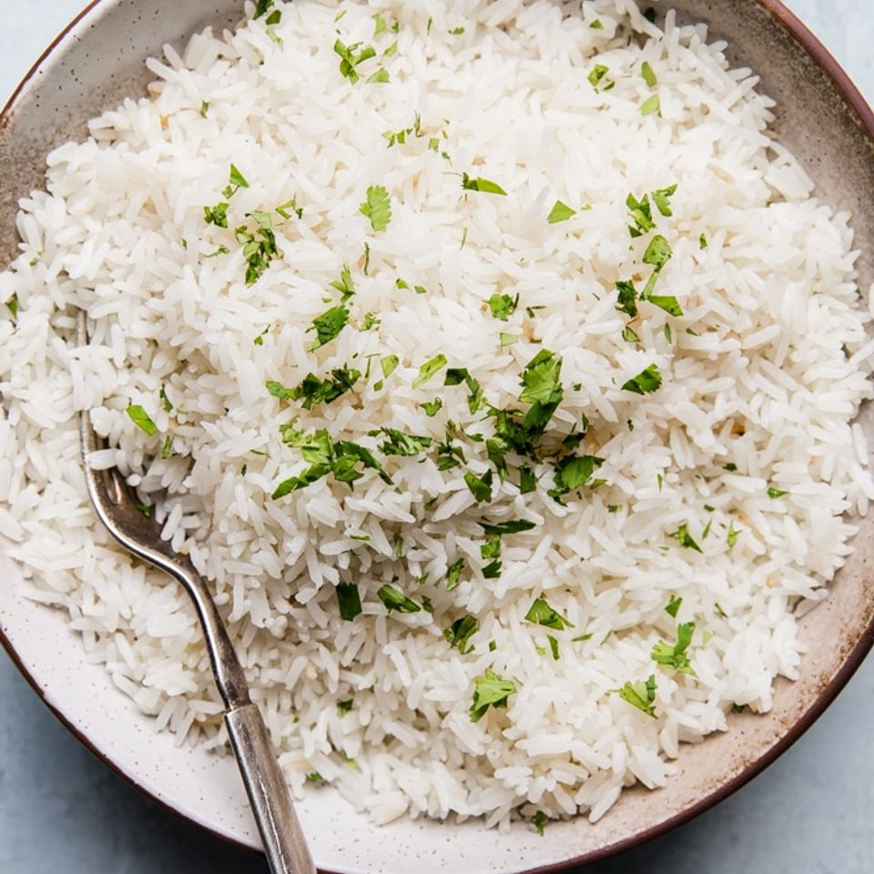

Coconut Rice

Description
A super easy way to make fluffy delicious coconut rice. My kids don't love it, but my wife and I do.
Ingredients
- 2 cups basmati rice
- 1 can coconut milk (Not the lite stuff)
- 1 + ½ cups water
- 1 teaspoon salt
- 1 teaspoon granulated sugar
- 1 medium sized bay leaf
- 1 tablespoon fresh cilantro, chopped (optional)
Steps
- In a medium-sized cooking pot, rinse the basmati rice several times until the water runs clear. If you
have
time, let it sit in cold water for 20-60 minutes.
- Drain rice in a wier mesh sieve and return to cooking pot.
- Add the coconut milk, water, salt, sugar and bay leaf. Mix.
- Bring the mixture to a boil, stirring occasionally.
- Once boiling, turn heat to low, cover and simmer for 20 minutes
- Uncover and leave on heat for 5 minutes
- Fluff and serve with some chopped cilantro sprinkled on top (optional)